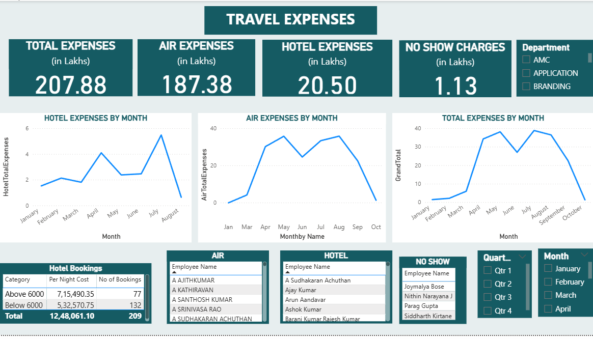
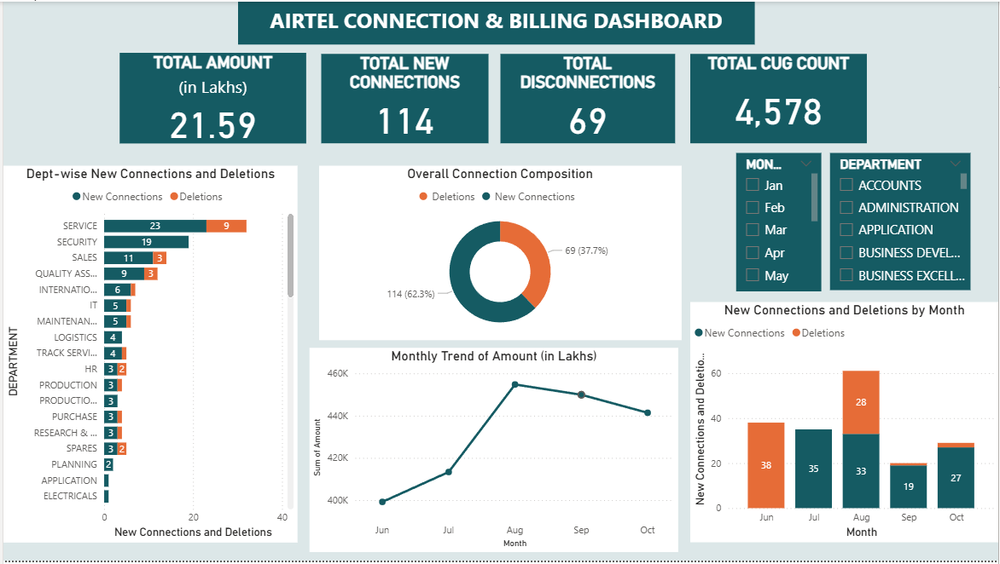
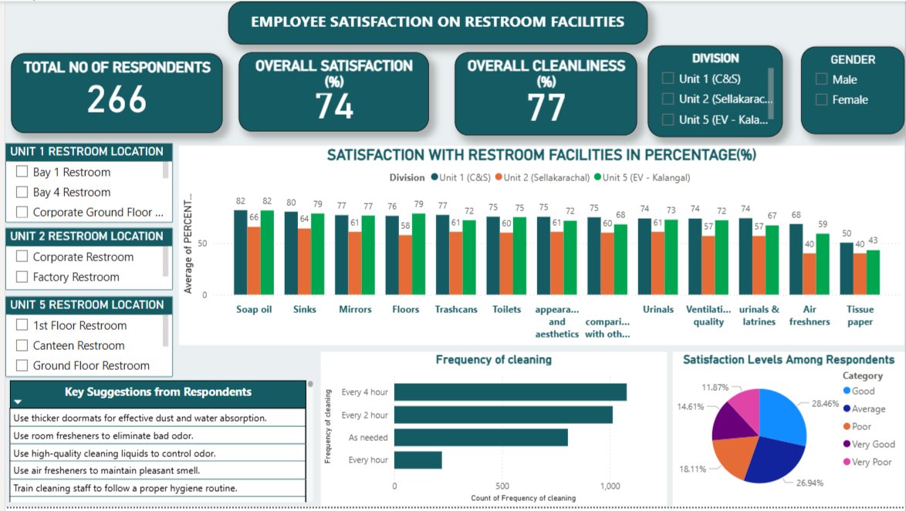

Bharani K
Data Analyst | Business Analyst
Analyzed 500+ employee and operational datasets and developed 5+ Power BI dashboards to drive data-driven business decisions.
Analyzed 500+ employee and operational datasets and developed 5+ Power BI dashboards to drive data-driven business decisions.
MBA graduate specializing in analytics with hands-on experience in analyzing HR and operational data. Developed 5+ interactive Power BI dashboards during internship, delivering insights across workplace safety, expense management, telecom usage, and employee experience. My core expertise includes Power BI, Advanced Excel, SQL, and basic Python. I specialize in dashboard design, KPI tracking, data cleaning, and MIS automation.

Analyzed workplace safety data to identify incident trends and high-risk areas. Found that most incidents occurred among new employees and were driven by unsafe actions. Highlighted key risk activities like manual handling. Suggested targeted safety training and stricter compliance measures to reduce incidents.

Developed a dashboard to monitor and analyze travel expenses across departments. Identified that air travel contributes the majority of costs, with peak spending during specific months. Detected inefficiencies like no-show charges. Recommended cost optimization through better planning and travel policies.

Built a telecom usage dashboard to track connections, disconnections, and billing trends. Observed steady growth in connections with peak usage in certain months. Identified departments with higher resource consumption. Suggested optimizing allocation and removing inactive connections to reduce costs.

Analyzed employee feedback on restroom facilities to measure satisfaction levels. Found moderate satisfaction with gaps in cleanliness consistency and consumable availability. Identified variations across different units. Recommended improving maintenance frequency and standardizing facility quality.

Performed end-to-end data analysis using Python, SQL, and Power BI,Cleaned and processed raw data for analysis,Extracted business insights using SQL queries,Built an interactive dashboard to analyze customer behavior, revenue trends, and product performance
View ProjectPropel Industries Pvt Ltd,Coimbatore | Aug 2025 – Jan 2026
Worked on employee and operational datasets to generate insights for business decisions.
Email: bharanikaruppusamy25@gmail.com